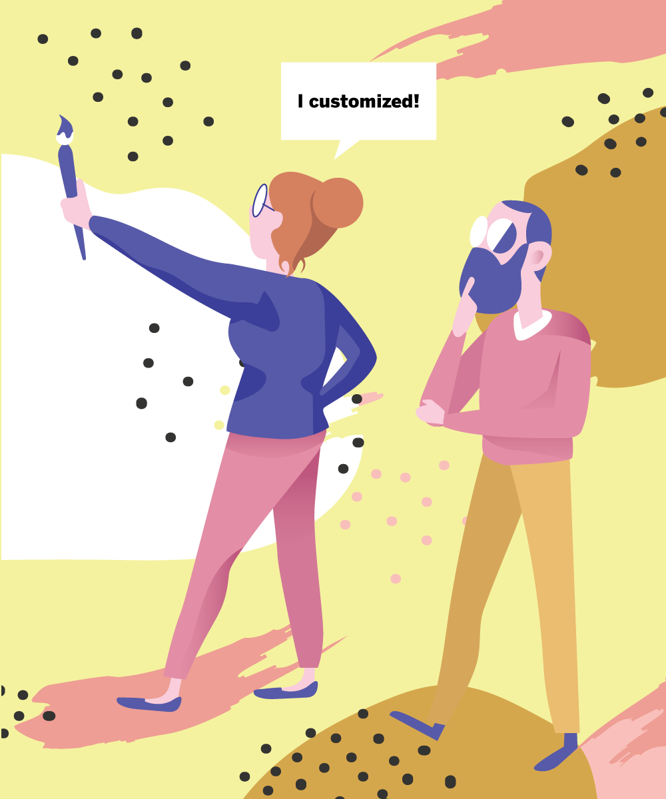
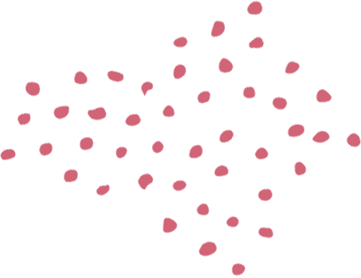
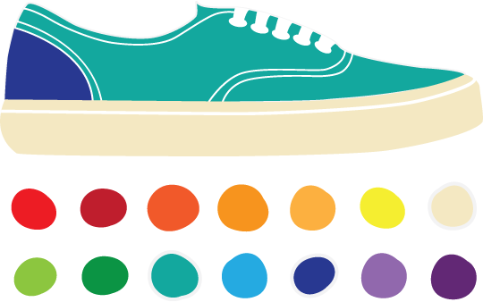

I'm a doctoral candidate at the University of Southern California Marshall School of Business
I study consumer behavior, often within the context of product customization. My dissertation examines consumers' customization choices as well as the psychological processes that shape these choices.
Prior to joining the Ph.D. program, I received a B.S. in Business Administration from USC and worked in market research and product innovation. In my spare time, I like to dabble in graphic design.
current research projects

research interests
Research
Interests

Customization
Understanding the choices consumers make when configuring their own products

Complementarity
Examining how consumers decide which products go well together
social influence
Looking at how those around us influence our decisions and consumption enjoyment